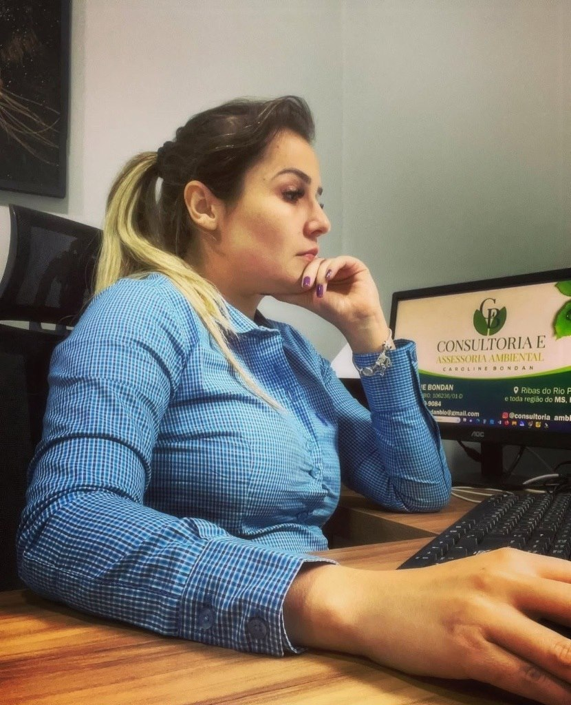

Licenciamento Ambiental
Condução completa do processo junto aos órgãos ambientais competentes, do requerimento à emissão da licença.
Produção, execução e acompanhamento de processos de licenciamento ambiental para os setores industrial, empresarial, rural e habitacional em todo o Brasil, com ênfase nos estados de MS, MT e SP.
Sobre
Bióloga e consultora ambiental com 12 anos de experiência na elaboração e condução de processos de licenciamento ambiental. Atua com rigor técnico-científico e compromisso socioambiental, oferecendo soluções estratégicas para empresas de pequeno, médio e grande porte nos setores industrial, comercial e do agronegócio. Reconhecida pela capacidade de alinhar conformidade legal, solução e as melhores práticas de sustentabilidade, promove resultados que fortalecem a responsabilidade e a preservação ambiental para empresários e parceiros.
Sua atuação abrange todo o território nacional, com ênfase nos estados de Mato Grosso do Sul, Mato Grosso, São Paulo, com relacionamento técnico direto junto aos principais órgãos ambientais como IBAMA, IMASUL, SEMADUR, IMAM, CETESB, SEMA-MT e secretarias municipais.
Serviços
Do diagnóstico inicial à obtenção da licença, cada etapa conduzida com precisão técnica e acompanhamento próximo ao cliente.
Condução completa do processo junto aos órgãos ambientais competentes, do requerimento à emissão da licença.
Acompanhamento periódico de indicadores ambientais para garantir conformidade contínua com a legislação.
Elaboração de EIA/RIMA e demais estudos técnicos exigidos para empreendimentos de diferentes portes.
Programas e ações de educação ambiental voltados a colaboradores, comunidades e cumprimento de condicionantes.
Desenvolvimento de projetos técnicos de engenharia ambiental integrados às exigências legais.
Elaboração e regularização do CAR, mapeamento de áreas rurais e adequação ao Código Florestal.
Solicitação e regularização de outorgas de uso de recursos hídricos e de segurança de barragens junto aos órgãos competentes.
Projetos e regularização de sistemas de irrigação, com uso racional e sustentável dos recursos hídricos.
Elaboração e execução de PRAD, com restauração ecológica e reflorestamento de áreas impactadas.
Planos de gerenciamento de resíduos sólidos adequados à atividade e ao porte do empreendimento.
Consultoria estratégica em gestão e sustentabilidade corporativa, alinhada aos objetivos do negócio.
Capacitação técnica de equipes em temas ambientais, normas e boas práticas de gestão.
Área de atuação
Diferenciais
Cada projeto, estudo e relatório é rigorosamente acompanhado, com comunicação direta e transparente, proporcionando a solução ideal para o cliente.
Formação em Biologia aplicada com rigor técnico em cada laudo, estudo e parecer entregue.
Condução ativa junto aos órgãos ambientais para reduzir prazos e evitar retrabalho.
Atualização constante frente às normas ambientais municipais, estaduais e federais.
Metodologia
Cada licenciamento, estudo ou regularização é acompanhado de perto, com controle detalhado de prazos, exigências dos órgãos ambientais e documentação técnica — para que nenhuma etapa fique parada ou seja perdida de vista.
O uso de ferramentas de gestão e monitoramento permite reunir informações, organizar protocolos e manter você informado sobre cada avanço do processo, com linguagem clara e sem tecnicismo desnecessário.
Acompanhamento ativo de cada etapa junto aos órgãos ambientais, evitando atrasos e retrabalho.
Relatórios e pareceres técnicos claros, estruturados e sempre à disposição do cliente.
Atualizações periódicas sobre o andamento do processo, sem você precisar cobrar satisfações.
Interpretação criteriosa de normas, laudos e indicadores técnicos para decisões seguras.

Como funciona
Um caminho claro e acompanhado de perto, em cada uma das etapas do seu processo de licenciamento ambiental.
Você chama no WhatsApp e conta sobre o seu projeto ou empreendimento.
Levantamento técnico da situação atual e das exigências legais aplicáveis ao caso.
Produção dos laudos, projetos e documentação técnica exigida no processo.
Submissão junto ao órgão ambiental competente, com acompanhamento ativo de cada etapa.
Entrega da licença ambiental, com orientação sobre condicionantes e prazos de renovação.
Depoimentos
“Conduziu todo o nosso processo de licenciamento com clareza e agilidade. Recomendo pela seriedade técnica e pelo cuidado em cada etapa.”
“Trabalho técnico impecável na regularização do nosso CAR. Comunicação sempre transparente sobre prazos e próximos passos.”
“Parceria de confiança para toda a gestão ambiental da empresa. Base técnica sólida e atendimento sempre muito atencioso.”
Fale agora com Caroline Bondan e solicite uma avaliação inicial sem compromisso.
Fale comigo agora